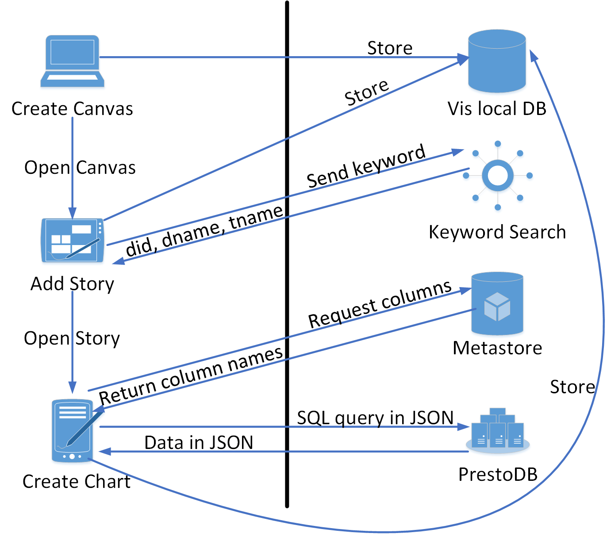

This project is maintained by infsci2711
In this project, we will visualize the data from the different databases. For the front-end design, we use HTML, CSS, JavaScript and KnocoutJS for the interface design. And we use Java, RESTful API and Hibernate for the back-end design.
Project page: MultiDBs-Vis
Supervisors:
Al-Khateeb, Shadi (shadikhateeb)
Li, Xiaoting (lxtlouise)
Members:
Akhtar, Omar (TSyndrome)
Cao, Qilu (Luke-pitt)
Cheng, Yu (chengyu6419515)
Tong, Kefei (KieferTowne)
Xi, Peng (rogerxi)
Yang, Zhijie (Miraclekiss)
Zou, Haoda (zenithda13)
In our project, users should be able to create and delete canvases. After creating a canvas, they can add stories to it. Here we connect to keyword search group to provide users with keyword search function to search for their target databases. Then based on the databases or tables they add, they could select certain columns and visualize them with Google Chart.
In order to implement these functions, the work of visualization contains four parts. The first part deals with tables, which stores information about canvases, stories and charts. The second part called DAO is used for connecting databases using Hibernate. The third part is called Manager, which is used for implementing different functions using Hibernate, such as adding canvases. The last part is Java classes, which call different functions to accomplish our goals.
To build our project, you will need to install Maven and git on Linux like server. Here are the commands that you need to type in the terminal at the very first beginning:
sudo apt-get update
sudo apt-get install git
sudo apt-get install maven
sudo apt-get install openjdk-7-jdk
sudo apt-get install nginx
sudo apt-get install docker
sudo apt-get install mysql-server
mysql -uroot -pYourpassword
CREATE USER 'dataverse'@'%' IDENTIFIED BY 'dataverse';
GRANT ALL PRIVILEGES ON *.* TO 'dataverse'@'%' WITH GRANT OPTION;
CREATE DATABASE visualization;
exit
cd /opt
sudo mkdir project
cd project
sudo git clone https://github.com/infsci2711/MultiDBs-Vis-Server.git
sudo git clone https://github.com/Luke-pitt/ColFusionDockerUtils.git
sudo git clone https://github.com/ColFusion/ColFusionUtils.git
sudo git clone https://github.com/infsci2711/MultiDBs-Utils.git
sudo git clone https://github.com/infsci2711/MultiDBs-Vis-WebClient.git
cd /usr/share/nginx
sudo rm -R html
sudo ln -sv /opt/project/MultiDBs-Vis-WebClient html
mysql -udataverse -pdataverse visualization < /opt/project/MultiDBs-Vis-Server/visualization2.sql
cd /opt/project/MultiDBs-Utils
sudo mvn install
cd /opt/project/ColFusionUtils
sudo mvn install
cd /opt/project/ColFusionDockerUtils
sudo mvn install
cd /opt/project/MultiDBs-Vis-Server
sudo mvn install
cd /opt/project/MultiDBs-Vis-Server/MultidbsVisServerAPI/target/
sh setup.sh
cd /opt/project/MultiDBs-Vis-Server/
sh stopserver.sh
The following figure describes how our project work with other MultiDBs projects:
After creating a canvas, it will be stored in our local database. Then we will add story to the canvas, we need to connect to the keyword search, sending then the keyword of our target database, and they will return us the database id, database name, and table name. At this time, the story will also be added to our visualization local database. Then we open the story and starting creating the charts. We send the request for columns to Metastore and they will return us with column names, thus enable us to select the columns that we want to visualize. After we specify the columns, we send a SQL query in JSON format to PrestoDB, and the will send us the data, also in JSON as return. Then the chart will also be stored in our local database and shown on the page.
In our project, we use RESTful API which is identified by URIs. Here is the tutorial website: http://www.restapitutorial.com/
There are mainly three parts of the API services, which are Canvas, Story and chart, and we will describe each of them one by one.
Canvas:
Story:
Chart: